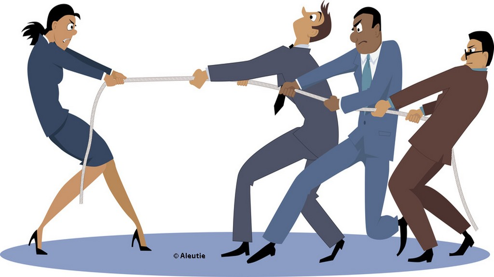
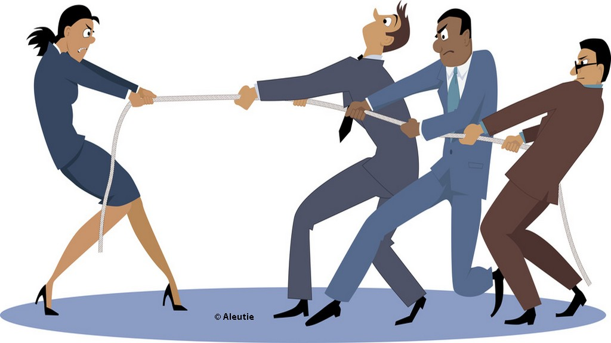

Autres articles

Victoire du Kényan au Marathon de Paris

Réouverture du zoo de Lille
Equité Hommes/Femmes: la France 8ème
Victoire du Kényan au Marathon de Paris
Réouverture du zoo de Lille
Equité Hommes/Femmes: la France 15ème
On arrivait à Roubaix en se disant qu’en ces temps politiques incertains, il reste deux choses intangibles : Paris-Roubaix est la classique la plus prisée du calendrier cycliste et, au-dessus de la ligne d’arrivée de son vieux vélodrome, il y a le ciel, rien que le ciel, quelle qu’en soit la couleur.
Las. Dimanche 9 avril, le Belge Greg Van Avermaet, implacable vainqueur de l’Enfer du Nord, a affirmé l’air de rien qu’à ses yeux, les Jeux olympiques, dont il a dominé la course sur route à Rio de Janeiro, demeuraient sa plus grande victoire.
Deux heures plus tôt, il avait franchi au sprint une ligne d’arrivée surmontée d’une arche pas perdue pour tout le monde, puisque s’y affichent les multiples sponsors de l’épreuve. De sorte qu’il n’est plus un seul endroit, dans ce lieu majeur du cyclisme, où l’on puisse poser les yeux sans voir le logo « Hauts de France », et que, sur certaines photos de Greg Van Avermaet, on ne pourra s’empêcher de penser à Xavier Bertrand.
Un Belge a gagné à Roubaix, donc, et ce ne fut pas celui qu’attendait tout le vélodrome, garni de Flamands rougis par le soleil et la bière. Tom Boonen, qui disputait sa dernière course sur le parcours qu’il a dompté à quatre reprises (un record), a fini treizième, épargné par la malchance mais pas par ses adversaires, qui ne lui ont pas fait cadeau d’un marquage lâche pour son Paris-Roubaix d’adieu.
Un Belge a gagné à Roubaix, donc, et ce ne fut pas celui qu’attendait tout le vélodrome, garni de Flamands rougis par le soleil et la bière. Tom Boonen, qui disputait sa dernière course sur le parcours qu’il a dompté à quatre reprises (un record), a fini treizième, épargné par la malchance mais pas par ses adversaires, qui ne lui ont pas fait cadeau d’un marquage lâche pour son Paris-Roubaix d’adieu.
La course, dès lors n’a plus jamais cessé d’être furieuse, et à l’arrivée, la moyenne horaire était de 45,204 km/h, nouveau record de l’épreuve. Le précédent datait de 1964. Un Néerlandais, Peter Post, s’était imposé sur un parcours ne comptant que 22 kilomètres de pavés (contre 55 kilomètres cette année), à l’époque où l’entreprise d’asphaltage des routes des Flandres menaçait l’avenir de la course.
Peter Sagan n’en était pas : s’il avait couru à sa perte en roulant trop près des barrières de sécurité sur le Tour des Flandres dimanche dernier, il n’a que son matériel à blâmer en la circonstance, puisqu’il a été victime d’un problème mécanique au moment où il tentait de rejoindre les six hommes de tête. Le champion du monde ne visera bien sûr pas le fabricant de sa machine, l’Américain Specialized, puisqu’il est aussi son premier soutien financier.
Sagan mis hors course par la malchance – il a aussi subi une crevaison alors qu’il était échappé, plus tôt –, Boonen et John Degenkolb, tous deux anciens vainqueurs, étaient les seuls autres favoris manquant à l’avant. Eux furent enterrés par le jeu d’équipe, leur commandant de laisser leurs coéquipiers Zdenek Stybar et Jasper Stuyven, en tête de la course, jouer leur chance face à Greg Van Avermaet.
Comme attendu, il n’y avait néanmoins rien à faire au sprint face au meilleur coureur de ce début de saison, déjà vainqueur en Belgique du Grand Prix E3 et de Gand-Wewelgem, et deuxième du récent Tour des Flandres.
Le leader de la BMC, jadis raillé pour sa constance sur la deuxième marche des podiums, court désormais escorté d’une confiance en lui qui le rend imbattable dans ces arrivées en petit groupe. Ce qu’il expliqua à sa façon en conférence de presse : « J’ai fait ce que j’avais à faire, j’avais confiance dans mon sprint. Je suis arrivé sur la piste avec le sentiment que j’allais gagner cette course, et c’est toujours un bon début. »
Vingt ans après la dernière victoire française, celle de Frédéric Guesdon en 1997, les coureurs tricolores ont fait office de figurants de ce 115e Paris-Roubaix. Les sixième et neuvième places de Arnaud Démare et Adrien Petit, bien placés dans le sprint du premier groupe de poursuivants, ne peuvent masquer la réalité de courses flamandes devenues les parents pauvres du cyclisme français, par ailleurs redevenu capable de gagner sur tous les terrains.
Autres articles
Victoire du Kényan au Marathon de Paris
Réouverture du zoo de Lille
Equité Hommes/Femmes: la France 8ème
Victoire du Kényan au Marathon de Paris
Réouverture du zoo de Lille
Equité Hommes/Femmes: la France 15ème